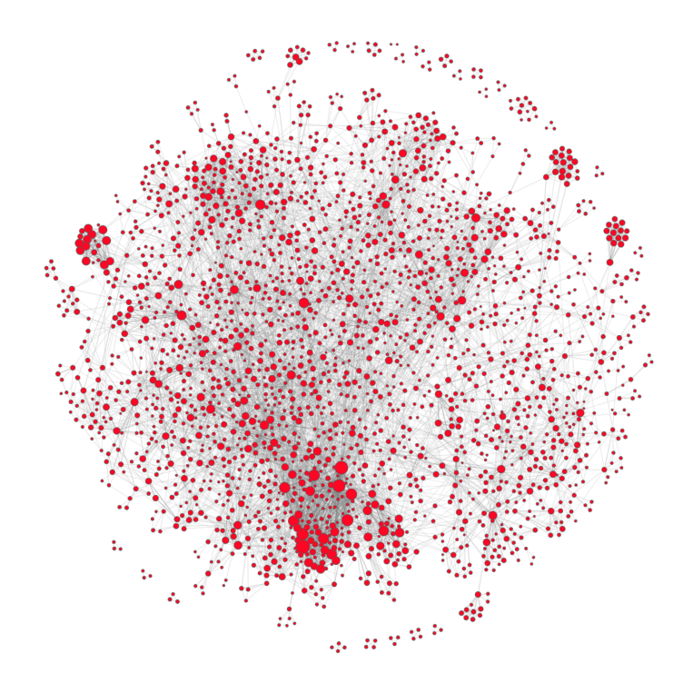
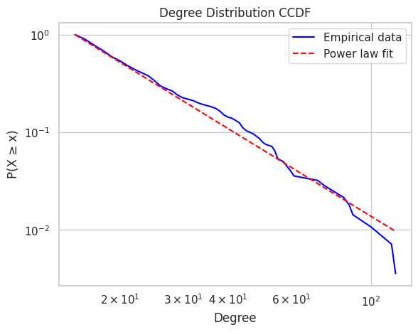
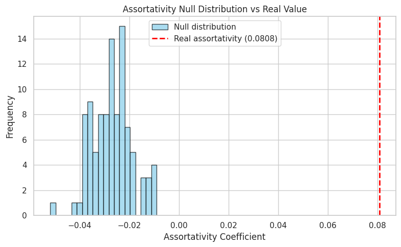
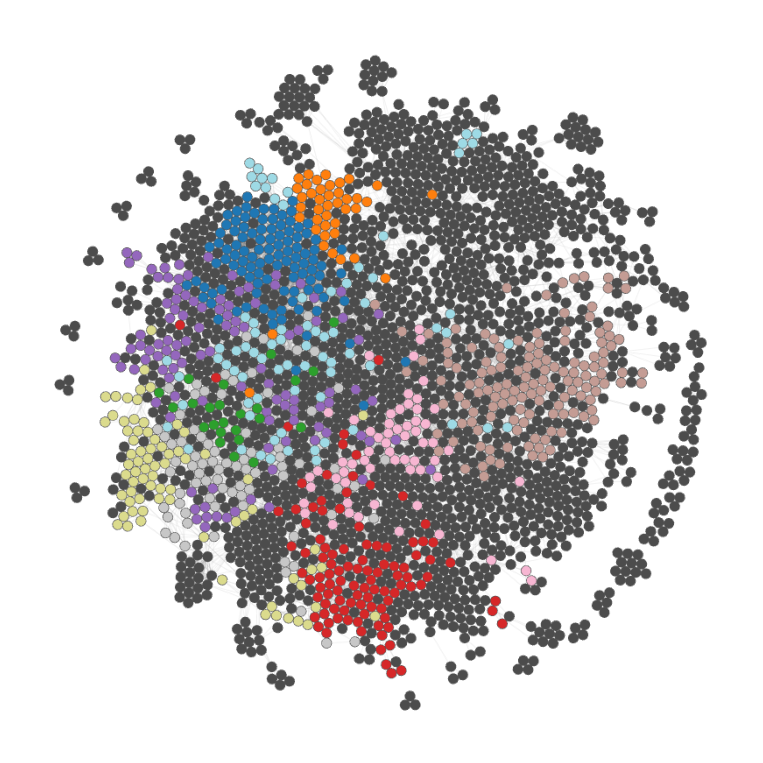

Network Analysis#
We visualize and analyze the co-mention network of people in Danish Ekstra Bladet media, tied to the entertainment category. To re-iterate: if two people are mentioned in the same article, they are connected.
Using networkx, the graph is obtained from the resulting DataFrame in the previous section, where:
Each node is a person
Each edge means they’ve appeared in the same article
A node’s degree is the number of connections
An edge’s weight is the number of distinct aritcles shared
To get rid of weak links, we only keep edges with weight \(>2\). This means that two people briefly co-mentioned in one or two articles, but never co-mentioned again, will be removed. Furthermore, we also removed resulting isolates (nodes with no edges). Such nodes are irrelevant for our network analysis.
Network Summary Statistics#
A few summary statistics derived from the network graph:
Metric |
Value |
|---|---|
Number of nodes (\(|N|\)) |
2344 |
Number of edges (\(|E|\)) |
8610 |
Average degree (\(\langle k \rangle\)) |
7.346 |
And for good measure, let’s get the 5 most connected nodes:
Name |
Degree |
|---|---|
Dronning Magrethe |
117 |
Joachim |
114 |
Henrik |
100 |
Frederik |
89 |
Christian |
88 |
All of whom are part of the Danish Royal Family (Kongehuset).
Example: Node and Degree Looking at the top 5 nodes (by degree) we see that node Magrethe has a degree of 117. This means that Magrethe is mentioned in relation to 117 other (unique) people, i.e. Magrethe is very famous and is frequently mentioned in articles, even if they don’t necessarily revolve around her.
Analysis of Entertainment Network#
Using netwulf we can visualize the network:

Note that the size of the nodes vary by the strength of connections, i.e. the bigger the node, the more co-mentions the associated person has.
The network exhibits symptoms of the small world phenomenon, e.g., it’s possible to go from one node (person) to another through very few co-mentions.
Power-law and Top Hubs#
It’s clear that some celebrities have a larger presence than others, which makes sense since these people may get more ‘clicks’. This is quantifiable through a measure called the power-law. Below is an illustration of the complementary cumulative distribution function (CCDF), which shows the probability that a node has degree \(\geq x\):

The network shows an interesting pattern: most people are only mentioned a few times, whereas a small number, usually high-profile celebrities, are mentioned more frequently. This creates a structure where a few key figures act as central “hubs” connecting to many others.
A statistical comparison with an exponential model (\(R=23.0994\) and \(p=0.0013\)) confirms the power-law is a significantly better fit. In simple terms, it’s not by chance that e.g. Magrethe is mentioned across many different articles.
This reflects the “rich-get-richer” effect, where high-profile individuals are repeatedly co-mentioned, which increases their presence in the network (the media). Because of this, looking at just a handful of these top mentioned celebrities can tell us a lot about trends and topics in entertainment news.
Among the top 20 most connected nodes (hubs) in the network, 55% are male and 45% are female, which says that there is a fairly balanced gender representation at the top. Compared to the overall gender distribution (56.2% male and 42.3% female), it seems that females might be slightly more prominent among the top figures than their total numbers would suggest.
This may hint that female figures, while fewer overall, are comparably central (or influential) in the entertainment media network. However, it is a bit inconclusive and we’d need more data to bring forth stronger conclusions from this.
Assortativity: Random Network#
To assess whether the observed network reflects real social patterns or if they are due to sheer chance, we looked at a network metric called degree assortativity. This is a measure of whether nodes with similar degrees tend to form connections.
In our case, the network has a positive assortativity coefficient of 0.0808, which means that high-degree celebreties tend to connect to other high-degree celebrities.
To actually see if this pattern was meaningful, we created 100 randomized versions of the network. These kept the same number of mentions per person but shuffled who was connected to who. In those random networks, the average assortativity was much lower (about \(-0.0280\pm0.0080\)), which is significantly lower than the real value:

The difference was big enough that we can confidently say the real network is not random. Statistically, there is strong evidence (\(p=0.005\)) that popular figures tend to connect together, more than just by chance.
Just a quick reality check. If we look at the Royal House, it would make sense that royals and their connections (all celebrities that are well connected, such as the Queen, King etc.) are probably co-mentioned as they are part of the same institution.
Network Communities#
Using Louvain-based community detection, we partitioned the network into clusters, or communities, that are well-connected. A community should ideally consist of individuals who share something significant such as topic or context - for instance, actors appearing in the movie Home Alone or broader, pop songwriters from 2010. By grouping individuals into such communities, we can begin to explain certain patterns or tendencies observed in the data.
Top Communities#
Each community is characterized by:
Internal connection density
Internal strength, i.e. total co-mention weight within the group
Boundary edges, i.e. links to outside the community
First, a table showing the overview:
Community |
Biggest node (seed) |
Community size |
Density |
Boundary Edges |
Modularity |
Theme |
|---|---|---|---|---|---|---|
1 |
Joachim |
104 |
1.27 |
530 |
0.117 |
Danish Royal Family |
2 |
Harry |
41 |
1.95 |
182 |
0.032 |
British Royal Family |
3 |
Geggo |
24 |
2.45 |
113 |
0.014 |
“Familien fra Bryggen” |
4 |
Silas Holst |
104 |
0.41 |
337 |
0.043 |
“Vild med dans” |
5 |
Nikolaj Lie Kaas |
119 |
0.31 |
379 |
0.043 |
Danish Actors |
6 |
Christopher |
95 |
0.39 |
317 |
0.034 |
TV Personalities / Writers |
7 |
Thomas Helmig |
12 |
3.29 |
17 |
0.005 |
“Klovn” / Music Family |
8 |
Oliver Bjerrehuus |
81 |
0.37 |
280 |
0.024 |
Models / Reality Celebs |
9 |
Fie Laursen |
73 |
0.40 |
143 |
0.022 |
Social Media Influencers |
10 |
Martin |
70 |
0.34 |
310 |
0.017 |
Mixed Public Figures |
and a graph visualizing the communities:

Communities are meaningful but they all suffer from alot of boundary connections, and interconnections with other communities, and as such are not perfect.
The Danish Royal Family stands out with the highest modularity and internal strength. It’s quite easy for the algoritm to partition all Royal House members, while communities like “Familien fra Bryggen” are denser. This is probably due to the community being very closed, and their names are not mentioned outside the context of “Familien fra Bryggen”.
Several groups clearly map to real-world categories (e.g. royalty, TV shows, influencers), which confirms that the algorithm captures socially relevant structures. In the explainer notebook we also show other people inside each community, which is how we derive the community theme in the table.
These 10 communities differ from each other in several ways. For example, we might expect the language used in articles about the royal family to be more formal and respectful, whereas the language in reality TV coverage is likely to be more casual and filled with slang. To explore and measure these differences, our next chapter will analyze the language within these communities.